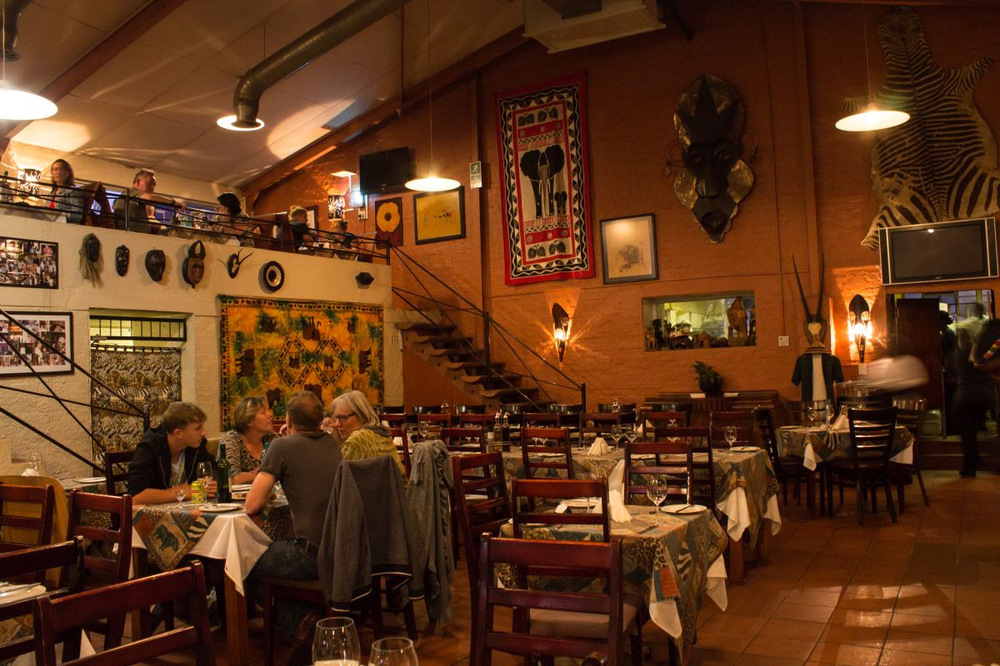
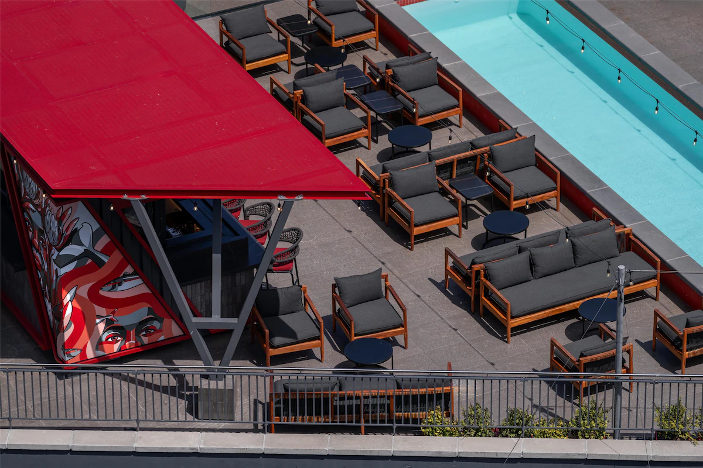
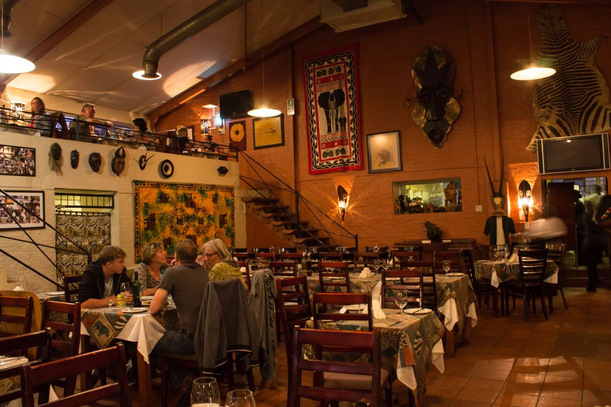
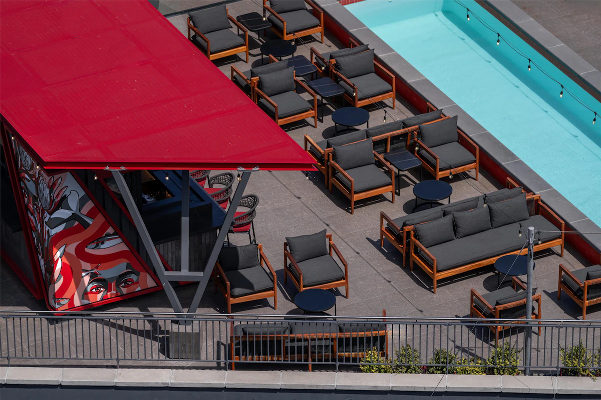

Now that you've seen a glimpse of where we live and celebrated with us, you might be thinking about extending your stay in South Africa. If you have a few extra days to spare, both Pretoria and Cape Town offer incredible experiences that go far beyond the wedding weekend.
To help you plan, we've put together a few of our personal favourite activities, hidden gems and great restaurants
- Consider this our 'insider guide' for those who want to truly immerse themselves in the food, history, nature, and culture of our beautiful country.
Pretoria
Where to eat
Capital Craft- known for serving quality craft beers and delicious pub food in a relaxed setting.
SMOKE- Boasts emaculate aesthetics and ambience, serving great food and drinks.
The Blue Crane Restaurant - Recommended for those who want a glimpse of nature and South African architecture while dining around a lapa.
Hazelwood (old east precicnt) -Vibrant, trendy dining hub centred around "The Village," known for modern restaurants, bars, and a buzzing, social atmosphere.
Menlyn Main -Pretoria's modern commercial and retail centre, featuring the enormous Menlyn Park Shopping Centre, major corporate buildings, and high-rise hotels.
Waterkloof- Jacaranda tree spotting central, an affluent, stately suburb known for its large, elegant homes, quiet tree-lined streets, and upmarket guesthouses with city views.
Nature and exploration
Hartebeespoort - Join a boat cruise or visit the aerial cable way to see the hartebeespoort dam from above, or explore the surrounding nature reserves
Tiger's Milk Camps Bay Tiger's Milk Camps Bay - Right by the beachside with affordable prices and the best sunset
Baptiste Rooftop bar- Exclusive rooftop bar serving 360 views away from the hustle of the city
African Cuisine
Seven Colours Eatery- Known for serving authentic, flavourful South African home-style coooking focusing on the "seven colours" plate (a Sunday meal tradition).
Marco's African Place- A vibrant restaurant offering a wide range of African dishes (from game to West African options) paired with live music and entertainment.
Meeting Point- A popular spot offering hearty, affordable Tanzanian cuisine, evoking nostalgic tastes of Southern Africa.
KwaMai Mutsa- Cosy unpretentious place known for Southern African braai (barbecue) and meaty dishes, served in a lively, authentic atmosphere.
Fine Dining
La Colombe- A world-renowned experience offering multi-course, theatrical menus with French and Asian influences in a stunning setting. (Book far in advance!)
Fyn- A highly-rated modern restaurant that masterfully blends Japanese techniques with South African ingredients.
Marble Restaurant- located in the V&A Waterfront, it offers an excellent high-end dining experience with the art of cooking with fire.
ëlgr- Contemporary cuisine with a strong emphasis on Scandinavian and local seafood preparations
Relaxed Dining, Music and Nightlife
Aegir Project- Relaxed and unpretentious beer house with live music and great burgers
The House of Machines- A legendary bar/café/clothing store combo known for excellent coffee by day and strong cocktails and live music by night. A classic Cape Town hangout.
Youngblood- A lively, dynamic gallery space that hosts exhibitions, performances, and has a serene ground-floor café and venue.
Neighbourhoods
Bo-Kaap- Famous for its brightly coloured houses and cobblestone streets, this historic area is rich in culture and history.
De-Waterkant - A trendy more priecier cosmopolitan area adjacent to the CBD and Green Point, featuring chic boutiques, stylish apartments, and design studios.
GardensGardens- The true heart of the city, home to the famous Company's Garden, the National Gallery, and many museums. It is densely packed with trendy cafés, bars, and bistros, offering a perfect mix of history, greenery, and urban cool.
Sea Point- two vibrant, adjoining Atlantic Seaboard suburbs famous for the Sea Point Promenade, a long, scenic walkway perfect for jogging and sunset strolls.
Observatory and Woodstock- historical, industrial suburb that has transformed into a hub for the ecletic residence,street art, design, and food. Home to The Old Biscuit Mill and many galleries and street art.
Nature and exploration
Table Mountain National Park- Ascend via the rotating cable car or hike the iconic Platteklip Gorge. The views of the city, mountains, and ocean are a must-do.
Cape Panintsula Drive- A full-day drive. Take the breathtaking Chapman's Peak Drive (toll) to the Cape of Good Hope and Cape Point.
Kirstenbosch Botanical Gardens- Widely regarded as one of the most beautiful botanical gardens in the world, set against the slopes of Table Mountain.
Wine Routes
Hemel and Aarde Valley- (Creation Wines, Ataraxia, Barto Eksteen)- Located near Hermanus, this route is celebrated for its cool-climate Pinot Noir and Chardonnay. The estates here offer high-end, contemporary tasting experiences.
Franschoek, Paarl and Stellenbosch- Check out the wine tram!. These regions form the historical core of the Winelands, known for their warmer climates which produce robust, full-bodied wines (especially Cabernet Sauvignon and Shiraz). They are essential visits for their stunning Cape Dutch architecture and deep French Huguenot heritage.
Riebeek Kasteel- A smaller, less crowded route known for its Mediterranean feel, olive farms, and exceptional Shiraz.
Landmarks and history
District Six Museum- A powerful and moving museum dedicated to the history of the forced removals during the apartheid era, told through the memories of former residents.
Robin Island- A moving, essential visit. Take the ferry from the V&A Waterfront to the island where Nelson Mandela was imprisoned. Tours are often led by former political prisoners.
Iziko Museums- A collective of museums covering history, art, and natural history. Includes the Slave Lodge, the South African Museum and Bo-Kaap museum.
The Company Gardens- Originally established in the 1650s to supply fresh produce to ships, it's now home to squirrels, the National Parliament and cafes.

 


